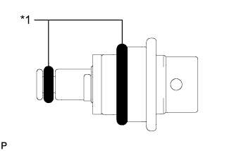
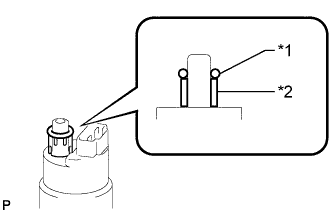
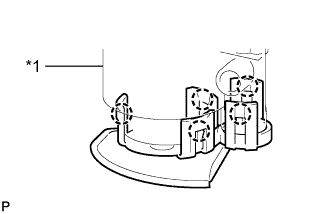
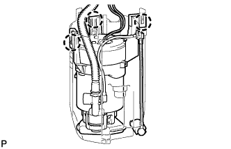
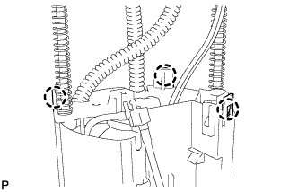
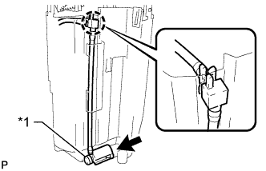
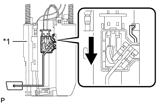

FUEL PUMP > REASSEMBLY |
| 1. INSTALL FUEL MAIN VALVE ASSEMBLY |
|  |
Apply a light coat of gasoline to 2 new O-rings and install the O-rings to the fuel main valve.
| *1 | New O-ring |
Install the fuel main valve to the fuel filter case.
| 2. INSTALL FUEL PUMP |
Connect the fuel pump wire harness connector to the fuel pump.
|  |
Apply a light coat of gasoline to a new O-ring. Then install the fuel pump spacer and O-ring to the fuel pump.
| *1 | New O-ring |
| *2 | Fuel Pump Spacer |
|  |
Attach the 5 claws to the claw holes to install the fuel pump to the fuel filter case.
| *1 | Fuel Filter Case |
| 3. INSTALL NO. 1 FUEL SUB-TANK |
|  |
Attach the 3 claws to the claw holes to install the No. 1 fuel sub-tank.
|  |
Attach the 3 claws to the claw holes.
Install the tube part to the No. 1 fuel sub-tank.
|  |
Attach the claw on the end of the tube to the claw hole. Connect the tube to the 2 clamps on the No. 1 fuel sub-tank.
Connect the jet pump to the No. 1 fuel sub-tank.
| *1 | Jet Pump |
Connect the fuel pump connector.
| 4. INSTALL FUEL SENDER GAUGE ASSEMBLY |
|  |
Set the fuel sender gauge on the No. 1 fuel sub-tank. Then slide the fuel sender gauge downward to install it.
| *1 | No. 1 Fuel Sub-tank |
 | Slide |
Connect the fuel sender gauge connector.